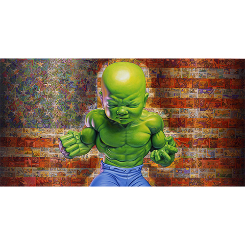
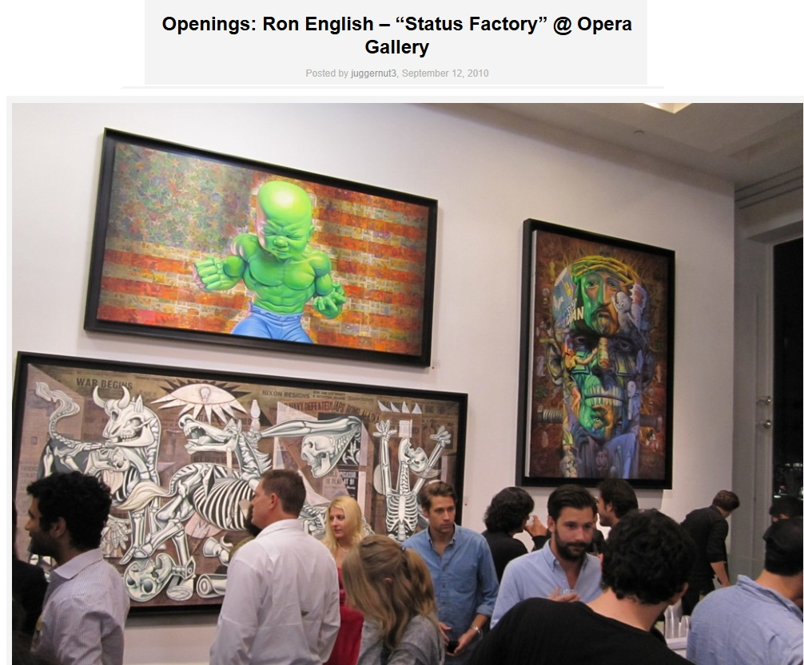
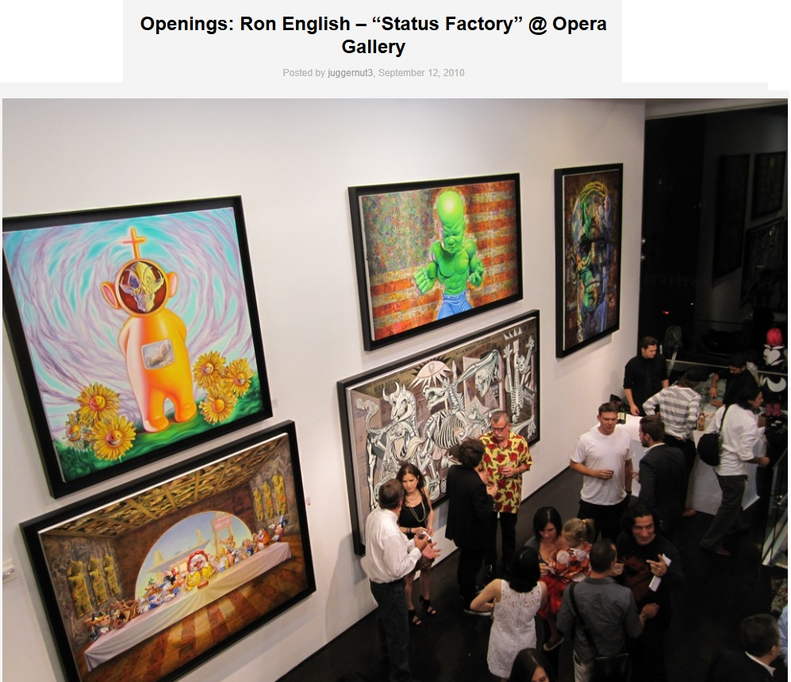
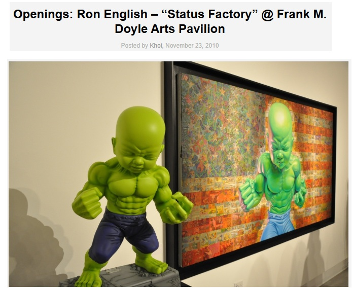

Exhibitions
Status Factory, Opera Gallery, New York, New York, US, September 12–October 29, 2010.
Status Factory – The Art of Ron English, Frank M. Doyle Arts Pavilion (Orange Coast College), Costa Mesa, California, US, November 12–December 17, 2010.
Literature
Ron English, Death and the Eternal Forever (London: Korero Press, 2014), p. 105. ISBN 978-0957664920.
Ron English, Status Factory: The Art of Ron English (San Francisco: Last Gasp of San Francisco, 2014), p. 67. ISBN 978-0867197891.
Ron English, Original Grin: The Art of Ron English (Paris: Cernunnos, 2019), p. 312. ISBN 978-2374950938.
Notes
This work appears in Arrested Motion’s opening and exhibition photographs for Status Factory at Opera Gallery, available here, accessed April 11, 2026.
It also appears in Arrested Motion’s coverage of Status Factory at the Frank M. Doyle Arts Pavilion, available here, accessed April 11, 2026.
This composition was later adapted by the artist as a related hand-embellished giclée print. Sprayed Paint Art Collection lists All-American Temper Tot HPM Embellished Giclee Print by Ron English- POPaganda as a 2015 signed hand-embellished giclée print with spray paint on fine art paper, not framed, measuring 18 × 12 inches and issued in an edition of 40, available here, accessed April 16, 2026.
The product description states that this hand-painted multiple was created to celebrate the mural Ron English painted on the Houston Bowery Wall in New York City.
Ancillary Documentation




